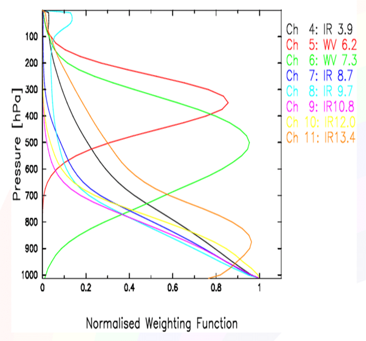

SEVIRI
Background
The Spinning Enhanced Visible and InfraRed Imager (SEVIRI) is MSG's primary instrument and has the capacity to observe the Earth in 12 spectral channels. Eight of the channels take measurements in the infrared band of the spectra, the rest for the visible channels (one of them in high resolution). The horizontal resolution is 3 km, except for the high resolution visible channel that is 1 km. Time resolution is one image every 15 minutes.
| SEVIRI Channels | Main characteristics |
|---|---|
| IR 3.9 | Used at night to detect fog and very low clouds. Window channel of CO2 |
| WV 6.2 | Water Vapour Channel |
| WV 7.3 | Water Vapour Channel |
| IR 8.7 | Window channel of H2O |
| IR 9.7 | Ozone absorption channel. Not suitable to data assimilation |
| IR 10.8 | Window channel of H2O |
| IR 12.0 | Window channel of H2O |
| IR 13.4 | CO2 absorption band |
SEVIRI channels and their characteristics

Figure of normalised weighting functions
See Eumetsat seviri for more detail on the instrument.
Radiance data from geostationary satellites have been assimilated in global numerical weather prediction models for some time (Köpken et al., 2003; Szyndel et al., 2004). Their high spatial and temporal resolution are particularly beneficial on global scales and in regions with a paucity of ground based measurements. For example, the assimilation of radiance data from Meteosat-8 and Meteosat-11 continue to be of value to the ECMWF's IFS data assimilation system (Burrows, 2020). Similarly, limited area models can benefit from these radiances.
Preparing data
This describes the work flow for preparing SEVIRI observations suitable for assimilation.
Radiances are processed in order to reduce the size and change the format of the files using the NWC-SAF products to discriminate between clear-sky and cloudy pixels.
Links to NWC-SAF software and description:
- https://www.nwcsaf.org/ct_v2021 - Cloud Type SEVIRI v2021
- https://www.nwcsaf.org/ctth_v2021 - Cloud Top Pressure, Temperature and Height SEVIRI v2021
- https://www.nwcsaf.org/Downloads/GEO/2021/Documents/ScientificDocs/NWC-CDOP3-GEO-MFL-SCI-ATBD-Cloudv1.0.1.pdf - Algorithm Theoretical Basis Document for the Cloud Product Processors of the NWC/GEO
Model settings
Enable assimilation
- Set
SEVIRI_OBS=1inscr/include.ass - Ensure
seviri${DTG}.ncfiles are available in$OBDIR(defined inecf/config_exp.h)
Preparing ODB
The processing (NetCDF –> ODB) by Bator is controlled by namelist entries. A brief some of the more relevant namelist entries is provided here.
NADIRS
| Namelist entry | Type | Description |
|---|---|---|
| InbTypeNetcdf | Integer | Number of NETCDF templates to read in the param.cfg file. Default value : 0 |
| MinSeviriSatid | Integer | Lowest SID waited in the SEVIRI data (NETCDF format). It is used as lower bound when allocating NSEVIRI type. Default value : 0 |
| MaxSeviriSatid | Integer | Highest SID waited in the SEVIRI data (NETCDF format). It is used as upper bound when allocating NSEVIRI type. Default value : 0 |
| MinMtvzaSatid | Integer | Lowest SID waited in the MTVZA data (HDF5 format). It is used as lower bound when allocating HMTVZA type. Default value : 0 |
| MaxMtvzaSatid | Integer | Highest SID waited in the MTVZA data (HDF5 format). It is used as upper bound when allocating HMTVZA type. Default value : 0 |
e.g.
&NADIRS
InbTypeBufr = 200,
InbTypeNetcdf = 1,
InbTypeHdf5 = 2,
MinSeviriSatid = 54,
MaxSeviriSatid = 70,
MinMtvzaSatid = 320,
MaxMtvzaSatid = 320,
SIGMAO_COEF(7) = 1.15,
SIGMAO_COEF(9) = 1.,
ECTERO(9,6,125,3) = 1.24,
ECTERO(9,6,124,3) = 1.34,
LATMS_MANDATORY_AVG = .TRUE.,
LVARBC_APD = .FALSE.,
/NetCDF
| Main key%Component | Type | Description |
|---|---|---|
| NSEVIRI(:)%Saut | integer | Array of SEVIRI data type. The indexes match SIDs. |
| NSEVIRI(:)%NbChannels | integer | Observations sampling (1/n). Default value : 1. |
| NSEVIRI(:)%Channels(:) | integer | Number of wished channels. Default value : 0. |
| NSEVIRI(:)%NbSupp | integer | Array of wished channels number. Default value : -9 |
| NSEVIRI(:)%NamChannels(:) | string | Number of meta-data per observation ( ZENTSUP). Default value : 0. |
| NSEVIRI(:)%NcmlName | string | One dimension array of variable labels containing Tb data. Each label index must be the same as the index of its channel number used in channels(:) component. Default value : ‘’. |
| NSEVIRI(:)%NwcSafName | string | Label of “NetCDF multicanal source” general attribute. Default value : ‘’. |
| NSEVIRI(:)%NamLat | string | Label of “nwcsafalgorithm “ general attribute. Default value : ‘’. |
| NSEVIRI(:)%NamLon | string | Label of the “lat” variable. Default value : ‘’. |
| NSEVIRI(:)%NamTime | string | Label of the “lon” variable. Default value : ‘’. |
| NSEVIRI(:)%NamSatAzimuth | string | Label of the variable which gives observation data in second since 01/01/1970 00h. Default value : ‘’. |
| NSEVIRI(:)%NamSatZenith | string | Label of the variable containing satellite azimuth angles. Default value : ‘’. |
| NSEVIRI(:)%NamCT | string | Label of the variable contaning satellite zenithal angles. Default value : ‘’. |
| NSEVIRI(:)%NamCTQ | string | Label of the variable containing the clouds types (CT). Default value : ‘’. |
| NSEVIRI(:)%NamCTP | string | Label of the variable containing quality flags associated to CT. Default value : ‘’. |
| NSEVIRI(:)%NamCTPQ | string | Label of the variable containing top clouds pressures (CTP). Default value : ‘’. |
| NSEVIRI(:)%LPrint | boolean |
A sample NetCDF namelist entry for SEVIRI data
&NETCDF
NSEVIRI(57)%Sensor=29,
NSEVIRI(57)%NcmlName='ncml_version',
NSEVIRI(57)%NwcSafName='nwc_saf_algorith_version',
NSEVIRI(57)%NamLat='lat',
NSEVIRI(57)%NamLon='lon',
NSEVIRI(57)%NamTime='time',
NSEVIRI(57)%NamSatAzimuth='sat_azi_ang',
NSEVIRI(57)%NamSatZenith='sat_zen_ang',
NSEVIRI(57)%NamSolAzimuth='sol_azi_ang',
NSEVIRI(57)%NamSolZenith='sol_zen_ang',
NSEVIRI(57)%NamCT='CT',
NSEVIRI(57)%NamCTQ='CT_QUALITY',
NSEVIRI(57)%NamCTP='CTP',
NSEVIRI(57)%NamCTPQ='CTP_QUALITY',
NSEVIRI(57)%SAUT=5,
NSEVIRI(57)%NbSupp=12,
NSEVIRI(57)%NbChannels= 8,
NSEVIRI(57)%Channels(1:8)= 1,2,3,4,5,6,7,8,
NSEVIRI(57)%NamChannels(1:8)='IR_039','WV_062','WV_073','IR_087','IR_097','IR_108','IR_120','IR_134',
/Model settings (Screening and Minimisation)
- Thinning:
- One pixel in every five is selected in Bator.
- In Screening the thinning distance is defined as 0.65°.
- Observation error:
- Set in Bator namelist
- 1.7x0.9(SIGMAO_COEF)=1.54 for channels 2,3 & 8
- 1.05x0.9(SIGMAO_COEF)=0.945 for the channels 4,6,7
- VarBC:
- AEMET use p0 for all channels with 24 h cycling.
- Anything else:
- "Safe" active channels are WV6.2 and WV7.3 (channels 2 and 3) over sea.
- AEMET only use Infrared channels so in Bator there is a conversion of the channels list. ch 4 -> ch 1
References
Technical stuff:
- BATOR: http://www.umr-cnrm.fr/gmapdoc/spip.php?article229
- namelist BATOR CY46t1_op1.02
- namelist BATOR CY46
Further reading and links to reports/presentations:
- Joan Campins, María Díez, Alberto Jiménez and Beatriz Navascués. 2022. Assimilation of clear-sky SEVIRI radiances in AEMET HARMONIE-AROME model. ACCORD Newsletter 3, 26–35.
- Montmerle, T., Rabier, F. and Fischer, C. 2007. Relative impact of polar-orbiting and geostationary satellite radiances in the Aladin/France numerical weather prediction system. Q.J.R. Meteorol. Soc., 133, 655–671. https://doi.org/10.1002/qj.34.
- Burrows, C. 2020. Assimilation of radiance observations from geostationary satellites: third year report. Research report No. 52, EUMETSAT/ECMWF Fellowship programme, ECMWF, Reading, UK. https://doi.org/10.21957/spbzz81e3
- Köpken C, Thépaut J-N, Kelly G. 2003. Assimilation of geostationary WV radiances from GOES and Meteosat at ECMWF. Research report No. 14, EUMETSAT/ECMWF Fellowship programme. ECMWF, Reading, UK. https://www.ecmwf.int/en/elibrary/73889-assimilation-geostationary-wv-radiances-goes-and-meteosat-ecmwf
- Szyndel M, Kelly G, Thépaut J-N. 2004. Evaluation and potential for assimilation of SEVIRI radiance data from Meteosat-8. Research report No. 15, EUMETSAT/ECMWF Fellowship programme, ECMWF, Reading, UK. https://www.ecmwf.int/en/elibrary/76556-evaluation-calibration-and-potential-assimilation-seviri-radiance-data-meteosat-8